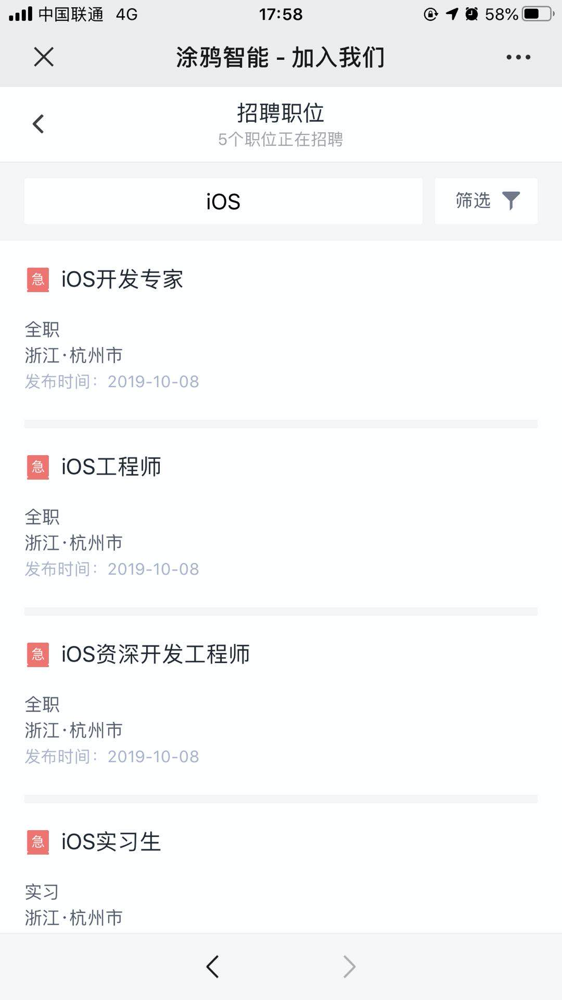

1. 加入我们
🎉 🎉 涂鸦 iOS SDK 组招新了～ 🎉 🎉
1.1. 职位介绍
1.1.1. 资深 iOS 开发工程师
- 该职位请发送到： xucheng@tuya.com
- Title：[Github] 姓名-应聘职位名称
- PS：
技术类岗位投递简历时建议附带作品介绍或技术文档链接
职位描述
1.独立完成 iOS 客户端程序的开发，相关功能预研和研究；
2.负责 iOS 端的相关IoT SDK的开发、维护；
3.负责 iOS 端的架构设计，提升团队开发和协作效率；
岗位要求：
1.本科及以上学历，3 年以上 iOS 开发经验，具有良好的英文阅读能力；
2.熟悉 Objective-C 语言，深入理解 OC 的运行时特性，有 IoT 方面开发经验的优先考虑；
3.熟悉算法、数据结构和常用的设计模式；
4.具有良好的技术钻研能力，能够深入底层解决技术难题；
5.有强烈的责任心和团队精神，善于沟通和合作；

1.2. 关于我们
关于 涂鸦智能，期待您的加入！
1.3. 更多职位：
1.4. 其他招聘渠道
1.4.1. 邮箱渠道：有 Github 标志，优先进入筛选列表哦 😄
- To： bole@tuya.com
- Title：[Github] 姓名-应聘职位名称
- PS：
技术类岗位投递简历时建议附带作品介绍或链接